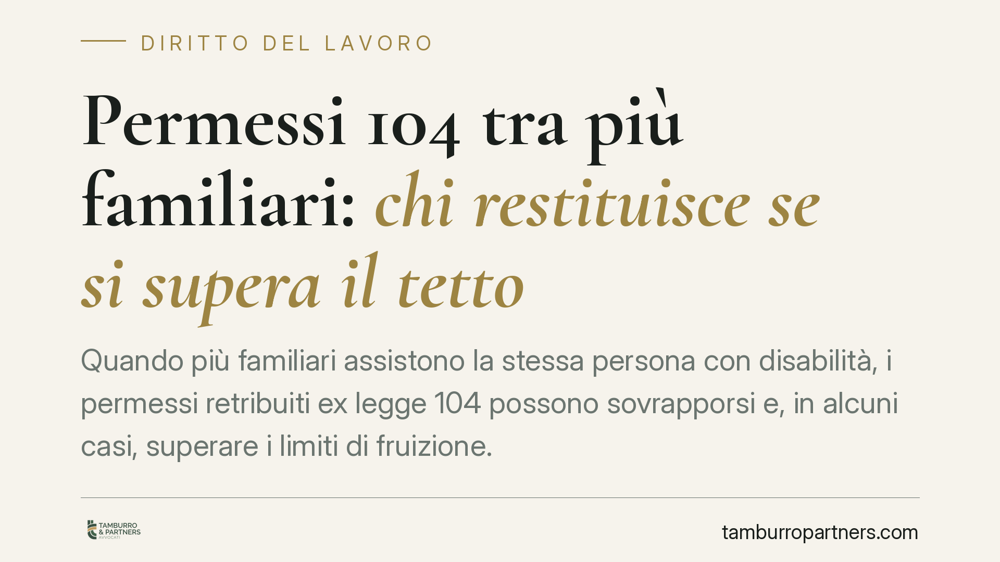

Permessi 104 tra più familiari: chi restituisce se si supera il tetto
Quando più familiari assistono la stessa persona con disabilità, i permessi retribuiti ex legge 104 possono sovrapporsi e, in alcuni casi, superare i limiti di fruizione. Si pone allora un problema concreto: chi deve restituire le somme percepite indebitamente? La riforma del 2022 ha ampliato la platea degli assistenti, rendendo il tema attuale per lavoratori e datori.

Il contesto: più assistenti per la stessa persona
L'articolo 33, comma 3, della legge 104/1992 riconosce al lavoratore dipendente tre giorni di permesso mensile retribuito per assistere un familiare con disabilità grave. Fino a pochi anni fa vigeva la regola del cosiddetto "referente unico": per ciascun assistito poteva esserci un solo lavoratore beneficiario (con l'eccezione dei genitori di figli minori).
Questo schema è cambiato con il D.Lgs. 105/2022 (il decreto di recepimento della direttiva europea sulla conciliazione vita-lavoro, noto come "decreto Conciliazione"), che ha superato il vincolo del referente unico. Oggi più lavoratori possono alternarsi nell'assistenza alla stessa persona, pur restando fermo il tetto dei tre giorni mensili spettanti a ciascun avente diritto, nel rispetto dei limiti e delle modalità previsti dalla norma.
Inquadramento normativo
La pluralità di assistenti introdotta dal D.Lgs. 105/2022 rende più probabile la sovrapposizione delle domande e, di conseguenza, il rischio di errori di computo. Quando le giornate complessivamente fruite eccedono quanto spettante, le somme percepite in eccesso costituiscono un indebito: l'INPS può chiederne la restituzione.
Sul piano civilistico, la ripetizione di queste somme si inquadra nell'indebito oggettivo di cui all'articolo 2033 del codice civile: chi ha ricevuto un pagamento non dovuto è tenuto a restituirlo. Resta il tema, più delicato, di individuare quale dei familiari debba effettuare la restituzione quando la fruizione è avvenuta in capo a più soggetti.
Cosa cambia per lavoratori e datori
Su questo punto occorre cautela. Non risultano, allo stato, criteri di imputazione dell'indebito fissati in modo univoco e automatico da una fonte normativa primaria. In via interpretativa e prudenziale si possono distinguere due situazioni:
- Fruizione successiva (i familiari usano i permessi in giornate diverse): se il tetto viene superato, l'indebito tende a gravare su chi ha fruito per ultimo, essendo stata la sua fruizione a determinare lo sforamento.
- Fruizione contestuale (i familiari usano i permessi negli stessi giorni oltre il consentito): in questo caso una ripartizione in parti uguali appare la soluzione più coerente, non essendo possibile attribuire a uno solo la responsabilità dell'eccedenza.
Si tratta, va ribadito, di criteri interpretativi e non di una regola consolidata e certa. Prima di assumere decisioni, è necessario verificare l'eventuale prassi amministrativa applicabile e le indicazioni dell'ente nel caso concreto, perché la soluzione può variare in base alla singola fattispecie e alle istruzioni operative via via adottate dall'INPS.
Per i datori di lavoro il profilo rilevante è duplice: da un lato l'esposizione al recupero delle somme anticipate e poste a conguaglio, dall'altro la necessità di una gestione documentale ordinata delle domande presentate dai dipendenti.
Cosa fare in concreto
- Verificare la fonte prima di agire. Non fondare decisioni su circolari di cui non sia accertata l'esistenza e il contenuto: consultare direttamente il portale INPS o richiedere l'estremo esatto del provvedimento citato.
- Mappare gli assistenti dello stesso soggetto. Quando più familiari fruiscono dei permessi per la stessa persona, tenere un prospetto aggiornato delle giornate utilizzate da ciascuno.
- Controllare i tetti mensili. Confrontare le domande presentate con i limiti spettanti, per intercettare per tempo eventuali sovrapposizioni o sforamenti.
- Conservare la documentazione. Richieste, autorizzazioni e conteggi vanno archiviati: in caso di contestazione dell'indebito sono lo strumento per ricostruire chi ha fruito, quando e in che misura.
- Valutare la contestazione nel merito. Di fronte a una richiesta di restituzione, verificare il criterio di imputazione applicato dall'ente e la correttezza del calcolo prima di procedere al pagamento.
La materia è in evoluzione e risente delle prassi applicative successive al D.Lgs. 105/2022. Consigliamo di esaminare ogni richiesta di recupero alla luce della situazione concreta e della documentazione disponibile, senza dare per scontato l'automatismo del criterio di imputazione.
*Contributo informativo a cura di Tamburro & Partners - Avv. Giuseppe Tamburro. Non costituisce parere legale.*
Ogni storia di lavoro ha i suoi tempi.
Se gestisci HR e vuoi un confronto su contenzioso, ispezioni o licenziamenti, scrivi allo studio. Ti rispondiamo entro un giorno lavorativo.